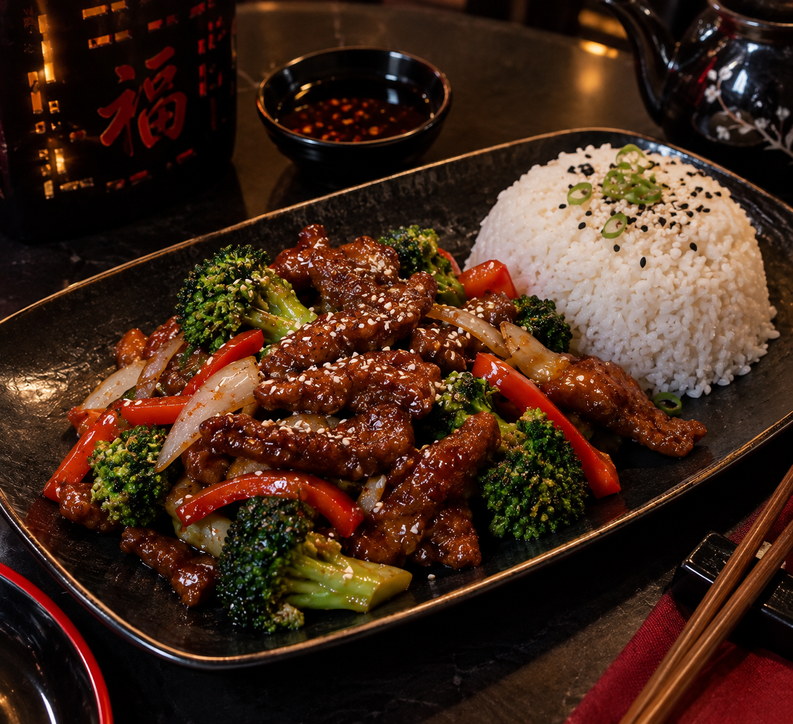

Disponible
DisponibleArroz frito especial
Arroz salteado al wok con huevo, vegetales y un toque de cebollín.
Tradición servida al momento
Descubre los aromas y sabores de China con recetas preparadas al momento, ingredientes frescos y platos hechos para compartir.
Explora el menú
Una mirada a nuestra cocina
Descubre algunos de los sabores que preparamos para ti.



Favoritos de la casa
Algunas opciones de nuestro menú, preparadas al momento y listas para disfrutar.
DisponibleArroz salteado al wok con huevo, vegetales y un toque de cebollín.
 Disponible
DisponibleFideos salteados al wok con vegetales crujientes y salsa de la casa.
EstelarPollo crujiente salteado con nuestra salsa agridulce y verduras frescas.
DisponibleCaldo reconfortante con fideos, pollo, huevo y vegetales.
Carne salteada con vegetales y salsa teriyaki, servida con arroz.
Ven a visitarnos o escríbenos para reservar tu mesa.